03
Sugar factory redesign
Visual identity
Branding
Package design
Food & beverage
Sugar factory is a candy-themed American brasserie nestled in the heart of NYC and Vegas. The rebrand introduces interactive food ordering and customization, making each visit an engaging adventure as it captures the essence of joy and togetherness, bringing friends and families closer through a shared experience: with interactive food ordering and customization. By putting Sugar Factory's innovative dishes as a focus and dialing back unnecessary complexities, the ultimate goal is to highlight that every bite and every moment spent here is a cherished memory waiting to be savored. It's a place where food becomes an art form and dining becomes an experience that connects people, fostering a sense of togetherness and celebration.
 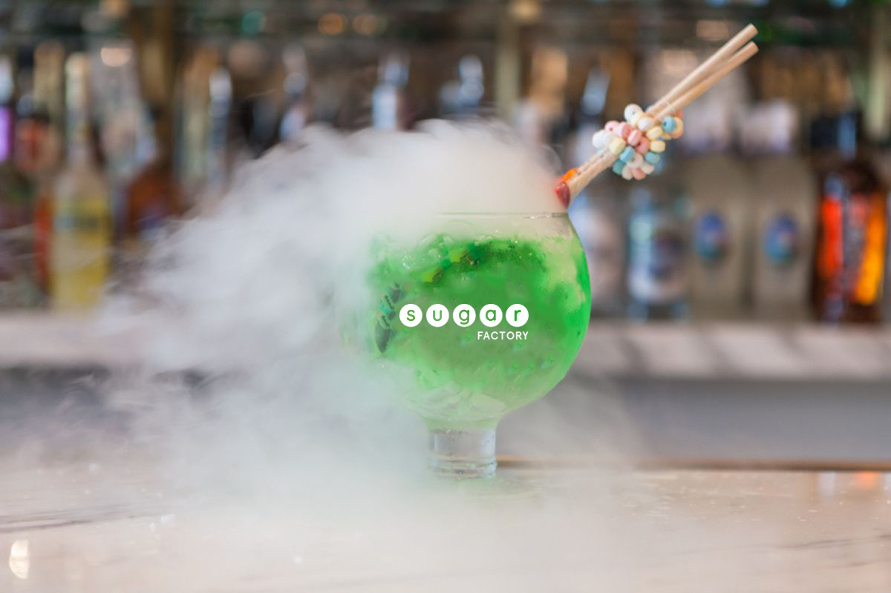
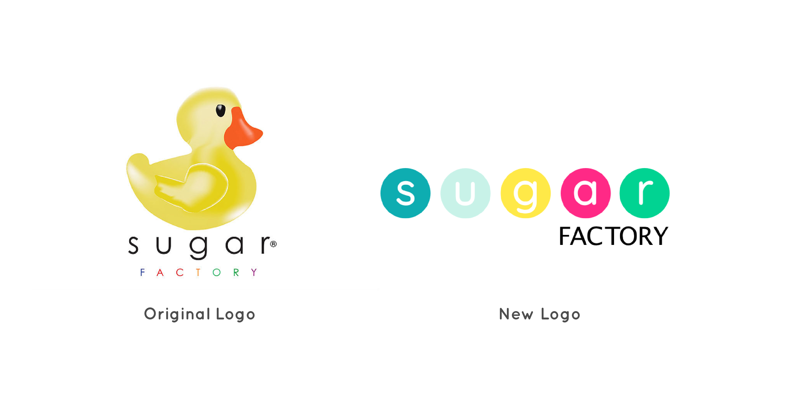
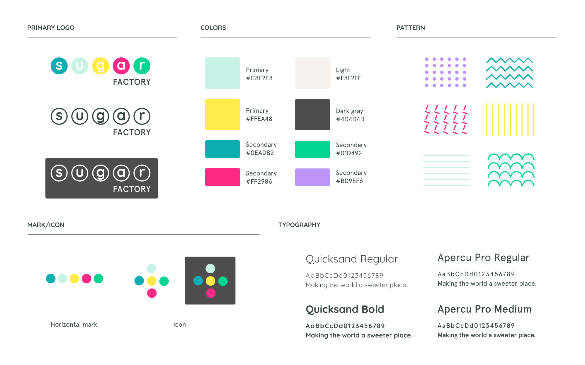
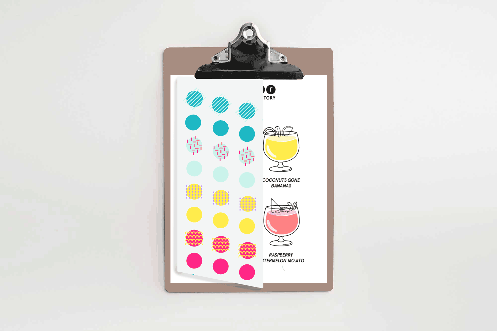
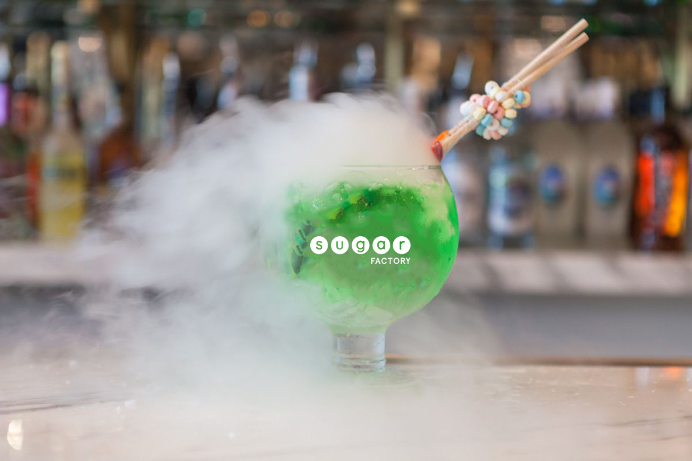
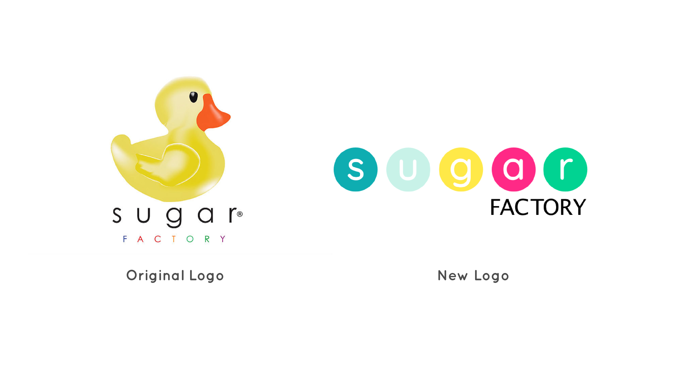
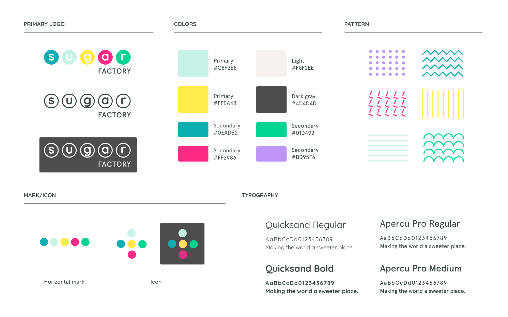
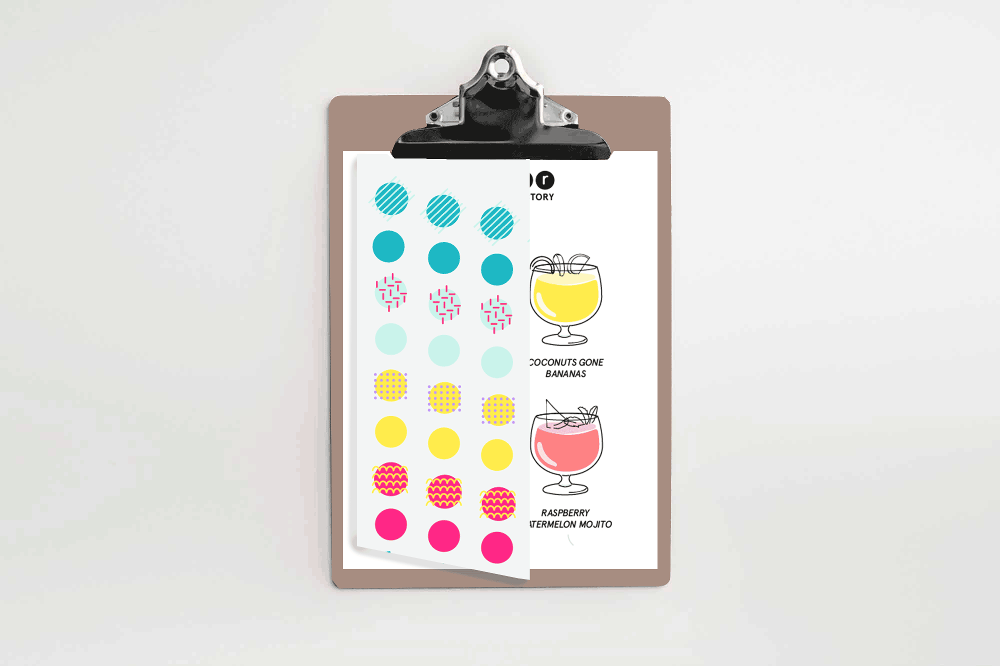
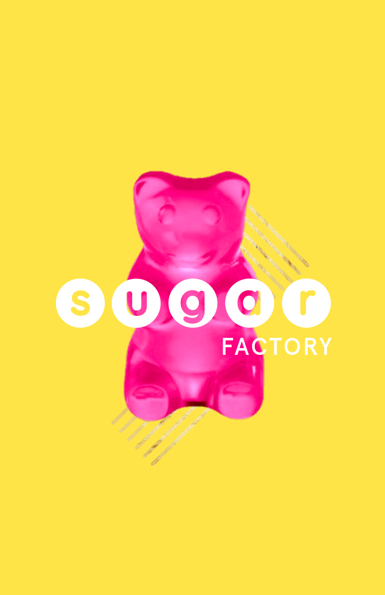
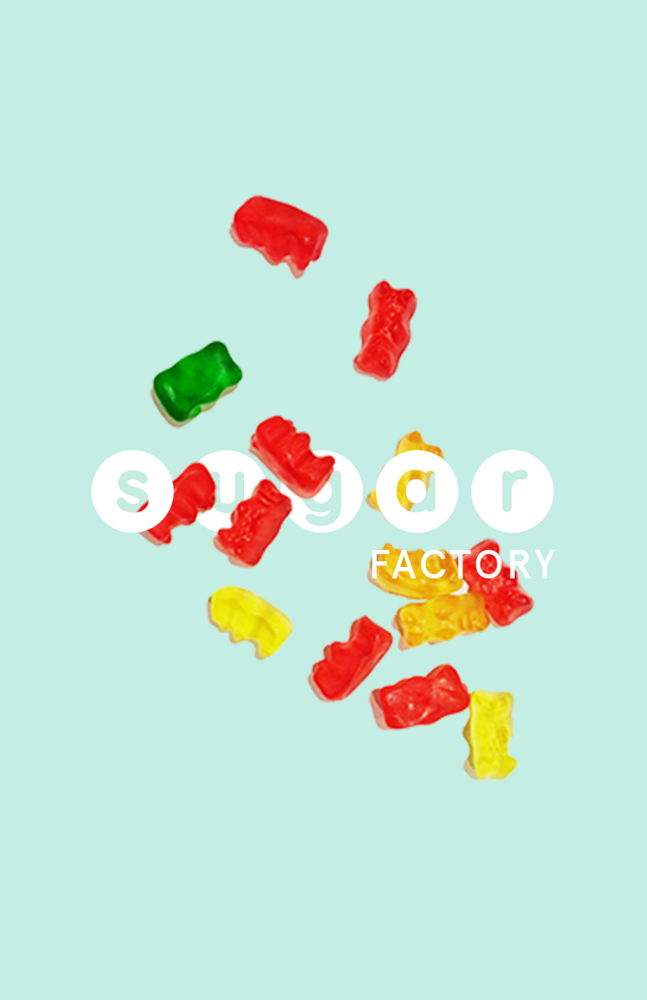
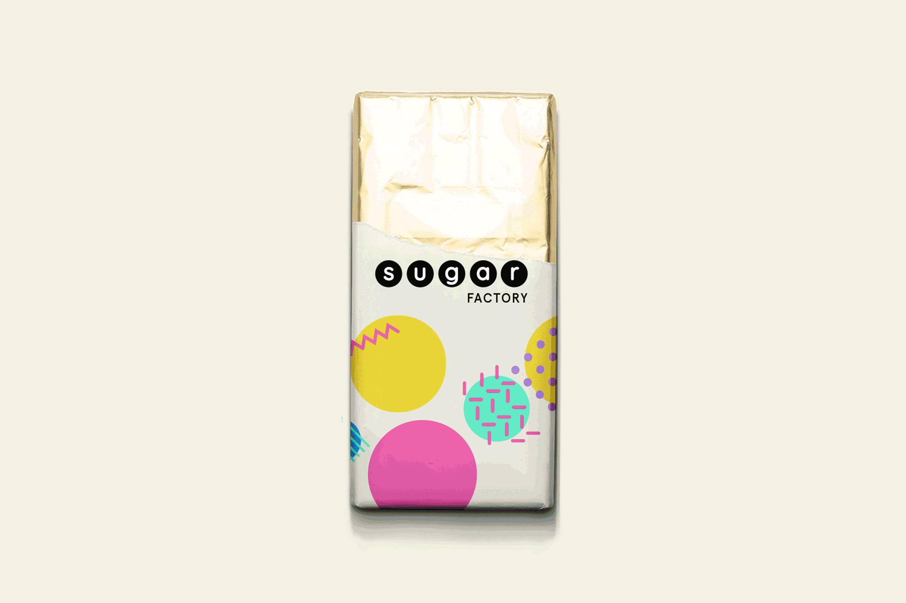
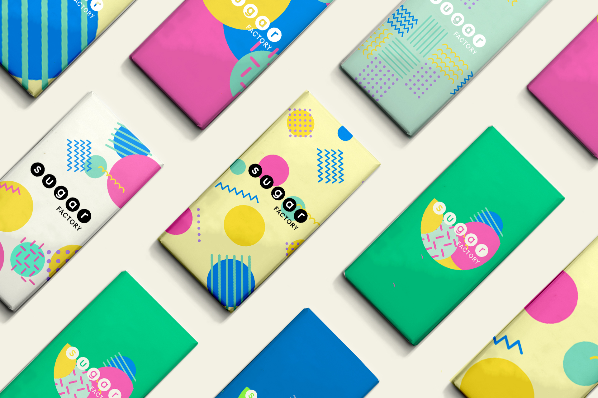